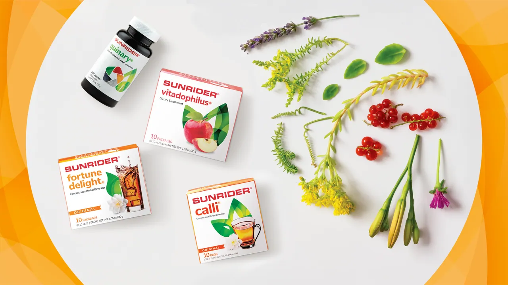
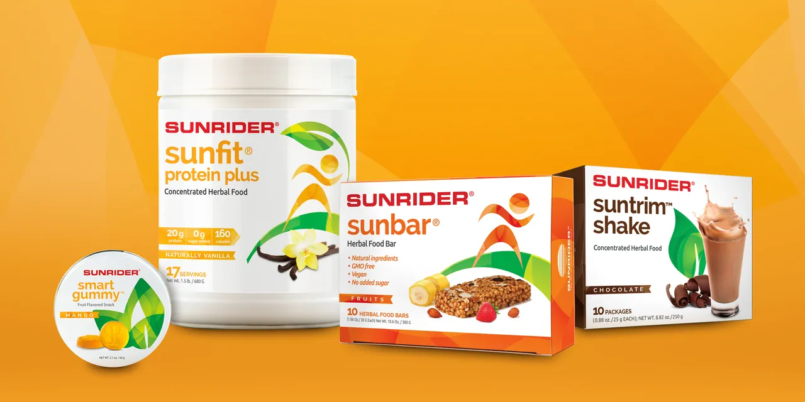
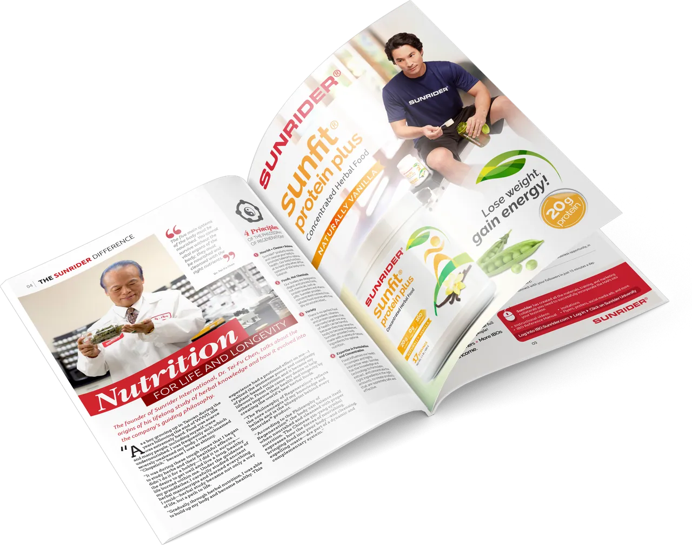

Packaging Design & Marketing
Health & Innovation
Sunrider’s mission is to improve the health and lifestyle of people around the world by providing high-quality products based on the art of herbal science. In 2017, its US product line needed a packaging redesign that felt clean, modern and cohesive.
The concept’s colors and abstract shapes are a nod to the brand’s organic ingredients, highlighting the vibrancy of its natural product categories and more than 400 original formulas. As Senior Graphic Designer, working under Art Director Andrew Yang, I designed the pack system and layouts across the line, then carried them into marketing materials and the 2017 product catalog.
- Role
- Senior Graphic Designer
- Art Director
- Andrew Yang
- Client
- Sunrider International
- Project
- 2017 Packaging Redesign, US Product Line
- Photography
- Austin Wu
- Copywriting
- Bob Seawright

Packaging
One Family, Many Products
Packaging Design · 2017
The new packs share one visual language, so a gummy, a bar, a protein powder and a shake read as one brand while each keeps its own color and character.

Print & Retail
Marketing Collateral
Advertising, Sales Collateral & Retail Display
The new packaging carried into marketing: a magazine advertisement, sales flyers, a pull-up banner, product cards and a newsletter, all built on the same system of color and shape.
Editorial
Product Catalog 2017
Editorial Design · Spanish, English & Chinese
I led the design of the 2017 product catalog, overseeing the art approach for the whole publication and designing every page and section. It features product photography that shows off the redesigned packaging and the refreshed brand identity.
I also worked on adjustments for the Chinese and Spanish translations so the catalog could reach readers in more than one language. English and Chinese editions are shown here.
“Healthy You” opener
“Colorful Trends” spread
Lip colors and liners
Nail colors, makeup tools and fragrance